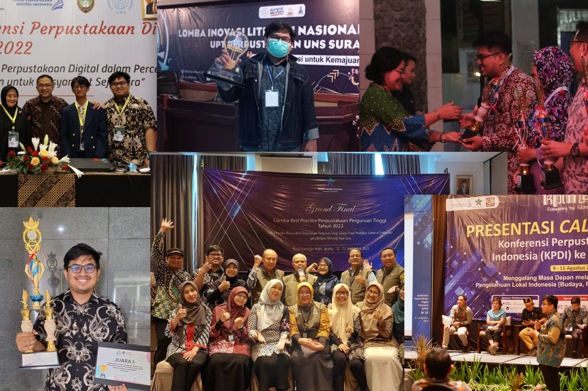
Riski Destrianto
I'm Designer
Tentang Saya
Pustakawan akademik dengan pengalaman di bidang pengelolaan perpustakaan, penerbitan ilmiah, dan repositori digital. Memiliki kemampuan dalam desain visual, manajemen konten, serta penerapan teknologi dan kecerdasan buatan untuk mendukung transformasi layanan informasi.
Mochammad Riski Destrianto
Saat ini sedang fokus dalam proyek preservasi digital dan riset terkait pemanfaatan AI di perpustakaan.
| Website | : | s.id/riskidestrianto |
| Telepon | : | +62 858 6692 **** |
| Kota | : | Semarang |
| Pendidikan | : | Ilmu Perpustakaan (Universitas Diponegoro) |
| : | mrdestrianto@gmail.com |
Mengembangkan literatif.id, JagaPerpus, dan dua proyek preservasi digital lain yang saat ini masih dalam tahap pengembangan dan belum dapat disebutkan namanya.
Kompetensi
Keahlian utama yang saya miliki dalam mendukung pengelolaan perpustakaan.
Layanan Dasar Perpustakaan
Memiliki kemampuan dalam merancang, melaksanakan, dan mengevaluasi layanan sirkulasi, referensi, serta bimbingan pemustaka untuk mendukung pembelajaran dan penelitian akademik..
Pengelolaan OJS & Repositori
Menguasai pengelolaan Open Journal System (OJS) dan repositori institusi, termasuk alur penerbitan, metadata, serta preservasi digital karya ilmiah sivitas akademika..
Penulisan Ilmiah
Mampu menulis karya ilmiah secara mandiri serta memberikan pendampingan dalam proses penulisan, pengelolaan sitasi, dan penerapan etika publikasi yang sesuai standar akademik..
Desain Grafis & Kemas Ulang Informasi
Mampu mengubah data dan informasi menjadi konten visual yang komunikatif, menarik, dan mudah dipahami melalui berbagai media publikasi.
Pengelolaan Penerbitan Buku
Berpengalaman dalam proses editorial, tata letak, hingga desain sampul untuk mendukung penerbitan buku ilmiah dan karya institusional.
Pengembangan Sistem Informasi Perpustakaan
Mampu melakukan modifikasi modul dan penyesuaian tampilan SLiMS serta pengembangan produk AI sederhana.
Resume
Pustakawan akademik dengan pengalaman lebih dari 5 tahun dalam bidang pengelolaan perpustakaan, publikasi ilmiah, dan desain visual bidang pusdokinfo. Aktif menciptakan karya dan mengembangkan inovasi di bidang Pusdokinfo.
Ringkasan
Riski Destrianto
Pustakawan Akademik | Desainer Visual
- Semarang, Indonesia
- mrdestrianto@gmail.com
Pendidikan
Sarjana Ilmu Perpustakaan
2015 - 2019
Universitas Diponegoro, Semarang
Pengalaman Profesional
Pustakawan Akademik
2024 - Sekarang
Perpustakaan Politeknik Negeri Semarang
- Mengelola layanan perpustakaan dan koleksi digital.
- Mendesain konten visual dan publikasi perpustakaan.
- Modifikasi template dan modul sistem otomasi perpustakaan.
Milestone
Bagian ini memuat berbagai pencapaian dan perjalanan profesional yang mencerminkan perkembangan karier, karya, dan kontribusi dalam bidang kepustakawanan.
- Semua
- Penghargaan
- Inovasi
- Kontribusi Akademik
Juara Harapan 1 Lomba Menulis Cerpen Kota Semarang 2025
Dinas Arsip dan Perpustakaan Kota Semarang
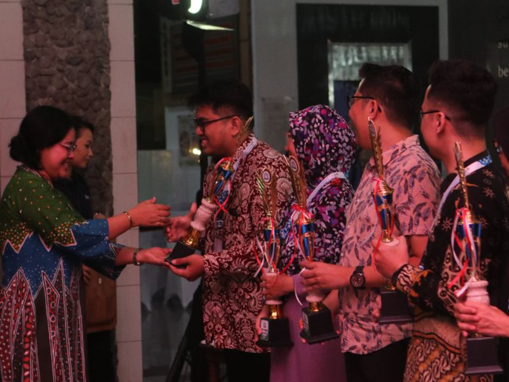
Juara 1 Indonesian Academic Librarian Award 2023
FPPTI Pusat
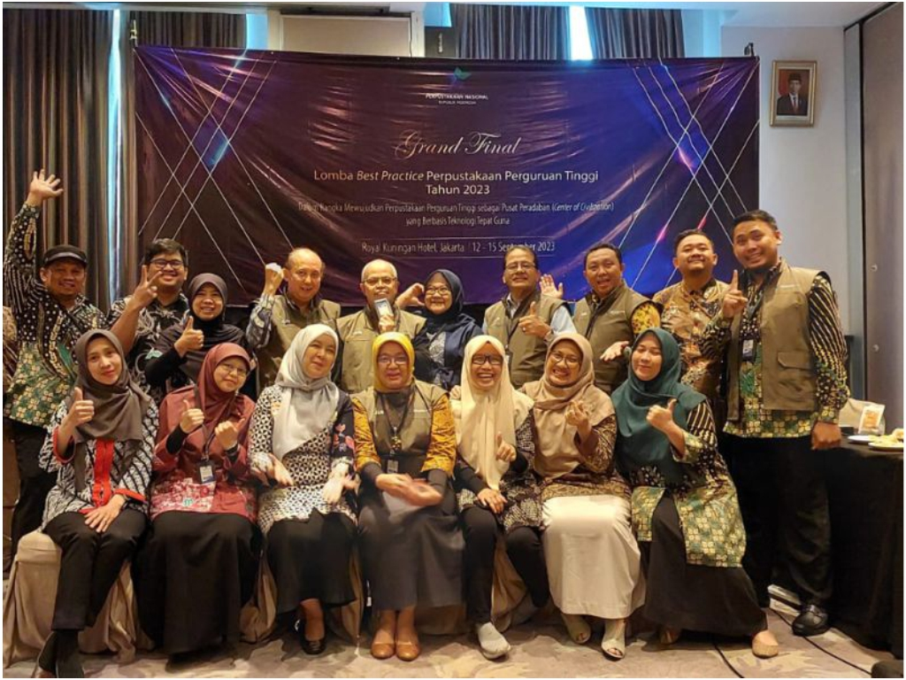
10 Besar Lomba Best Practice Perpustakaan Perguruan Tinggi 2023
Perpustakaan Nasional RI
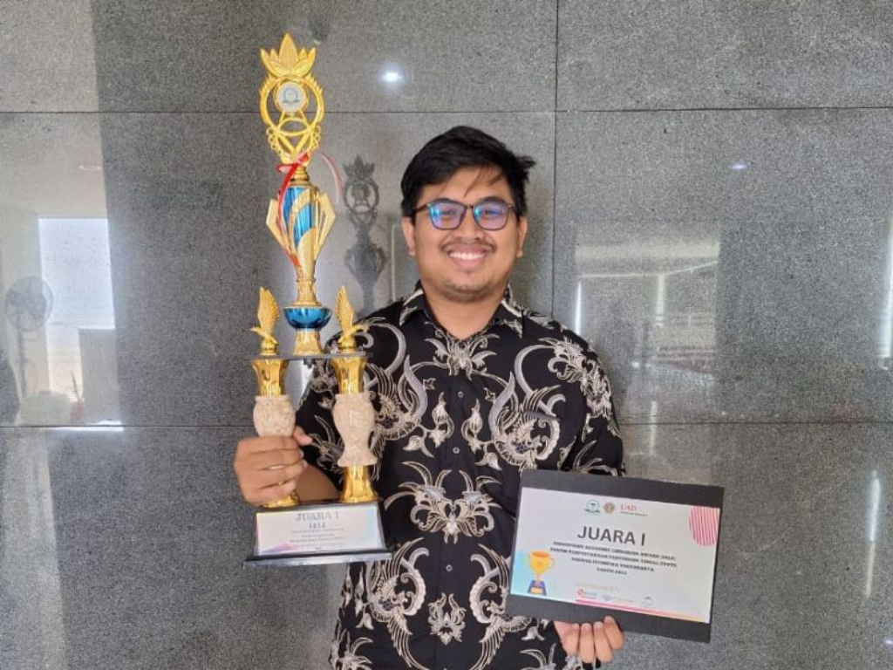
Juara 1 Indonesian Academic Librarian Award 2023
FPPTI DIY
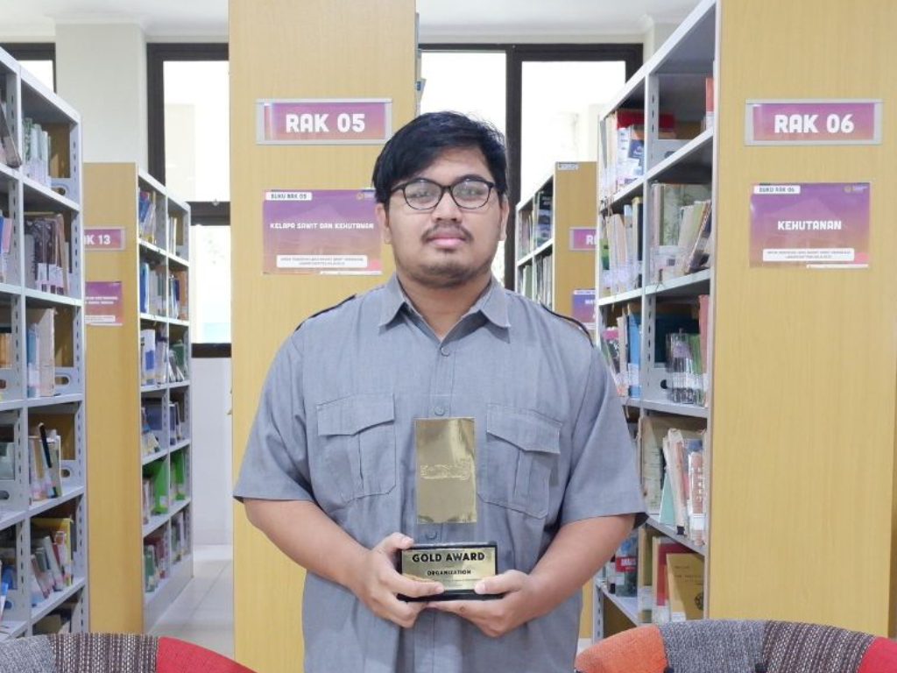
Gold Award – International Innovation & Design In Library & Information Science Competition 2022
Indelib
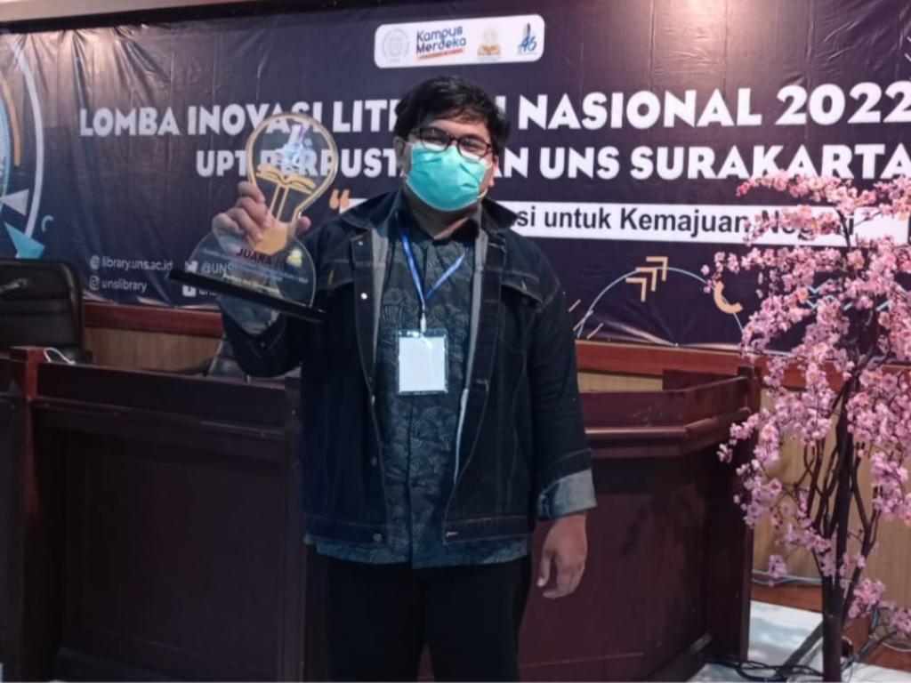
Juara II Lomba Inovasi Literasi Nasional 2022
Perpustakaan Universitas Negeri Sebelas Maret
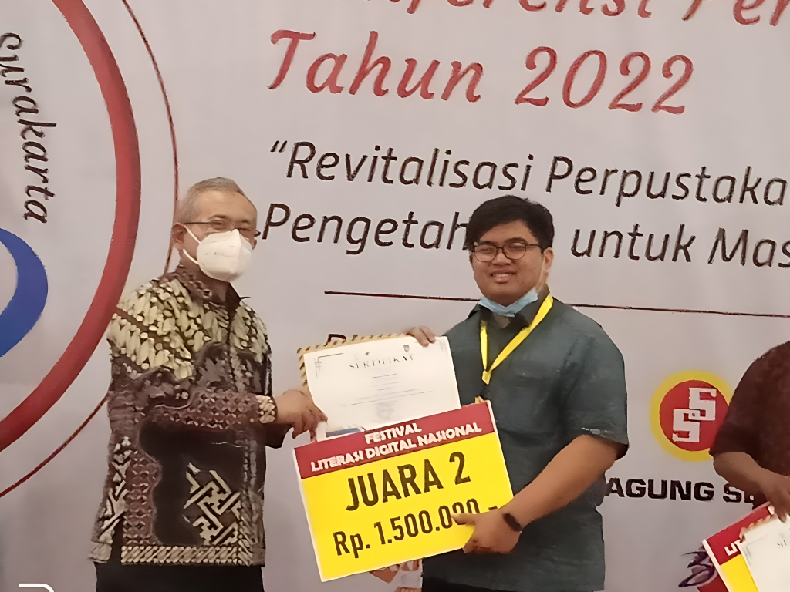
Juara II Festivasi Literasi Digital Nasional
Forum Perpustakaan Digital Indonesia
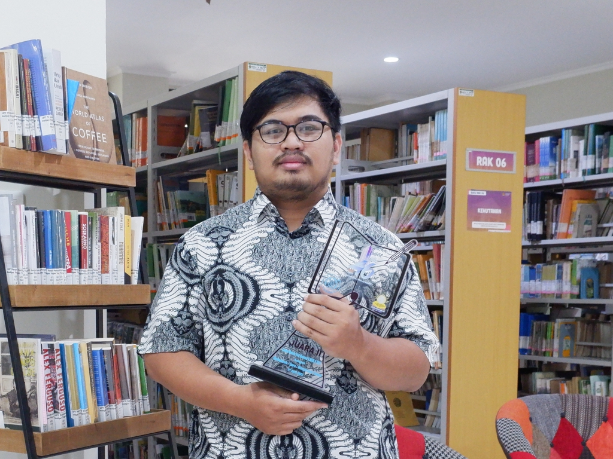
Juara II Lomba Esai Nasional
Perpustakaan Universitas Negeri Sebelas Maret
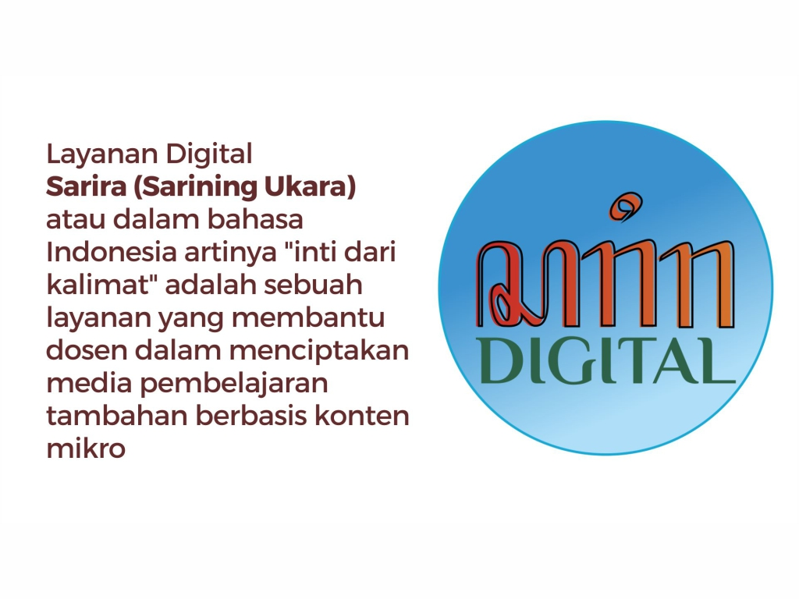
Terbaik 3 Academic Library Innovation Award 2021
FPPTI DIY
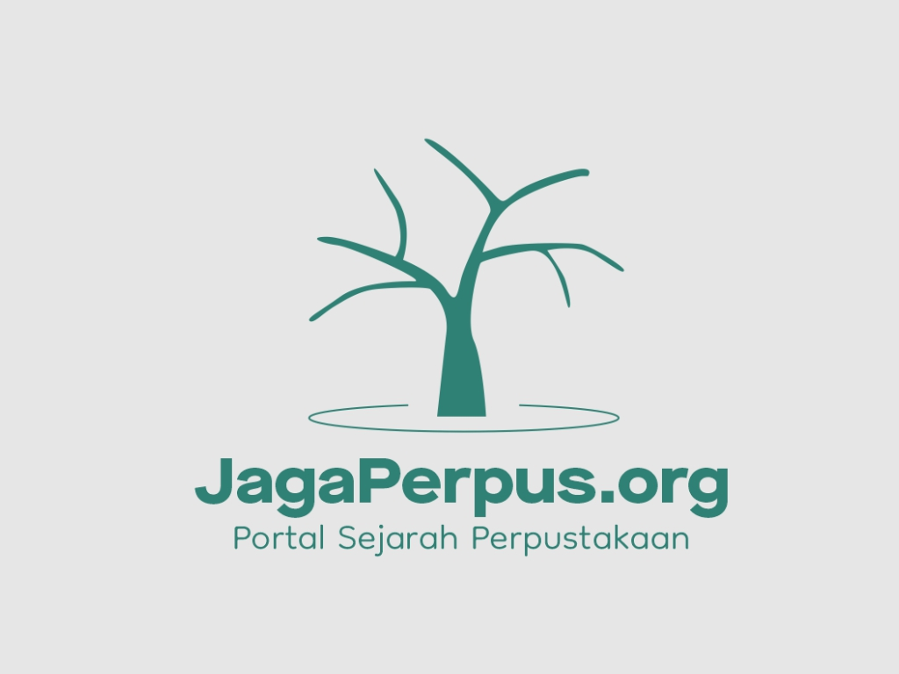
JagaPerpus
Repositori digital bidang Perpustakaan dan Kepustakawanan Indonesia
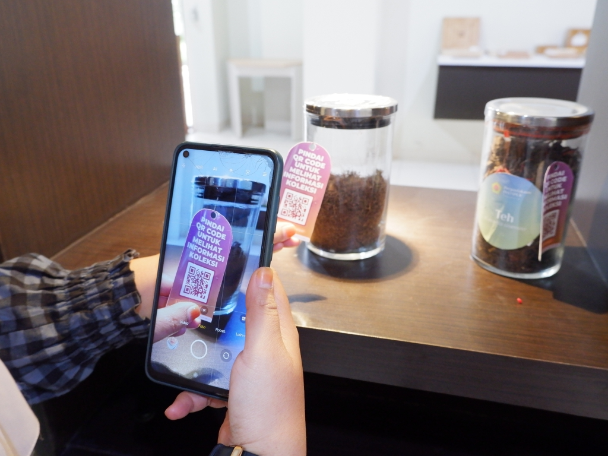
Pengembangan Koleksi Realia berbasis Konten Grafis
Inovasi dalam representasi koleksi perpustakaan non-buku
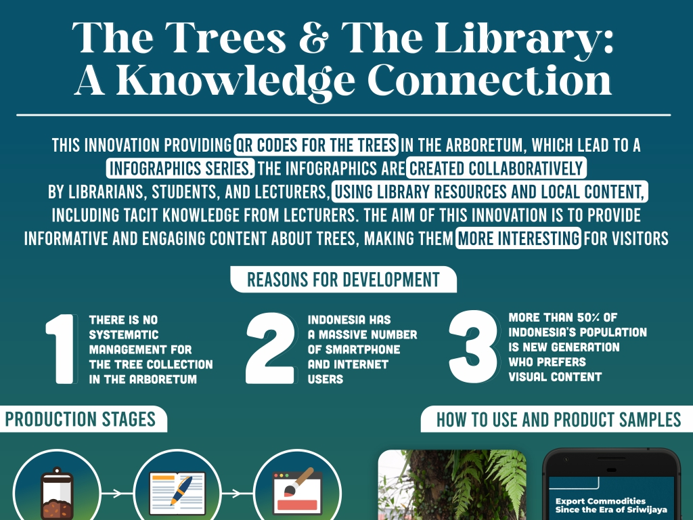
Call of Poster WLIC IFLA 2023
Terpilih dalam ajang internasional IFLA World Library and Information Congress
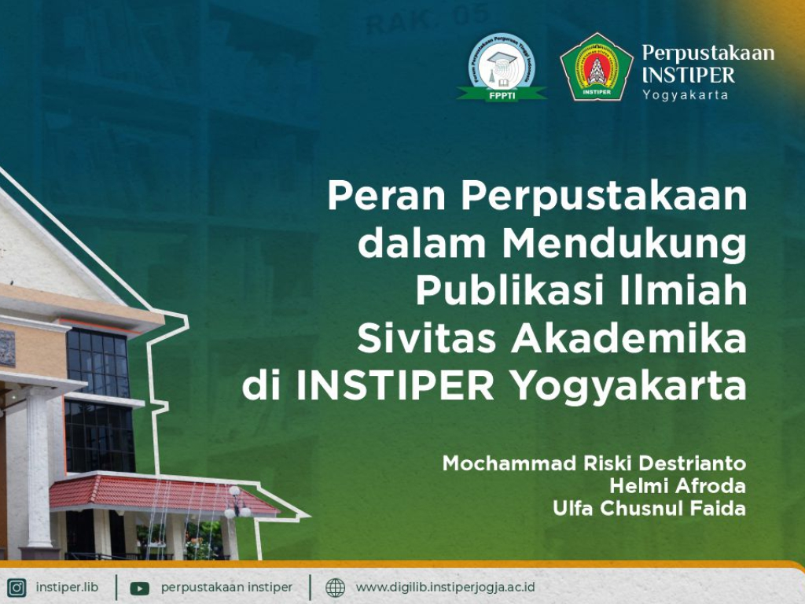
Call of Best Practice KPPTI 2023
Terpilih dalam Konferensi Perpustakaan Perguruan Tinggi Indonesia ke-1
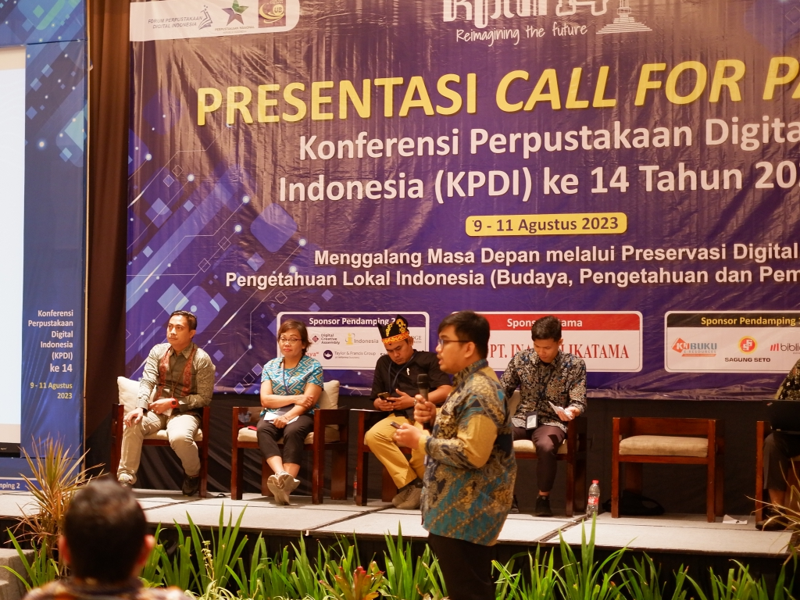
Call of Paper KPDI 2023
Terpilih sebagai pemakalah pada Konferensi Perpustakaan Digital Indonesia 2023
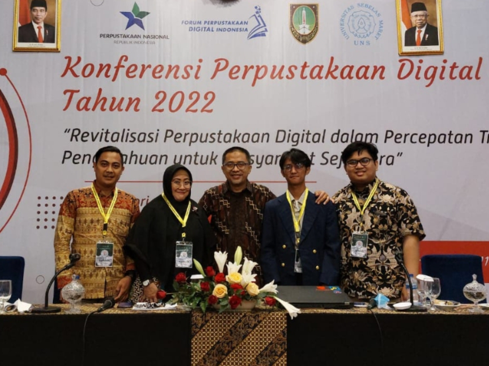
Call of Paper KPDI 2022
Terpilih sebagai pemakalah pada Konferensi Perpustakaan Digital Indonesia 2022
Kolaborator
Rekan yang pernah atau sedang berkolaborasi dalam proyek kreatif, akademik, dan digital saya.